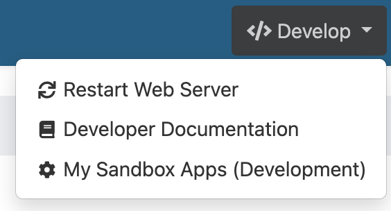
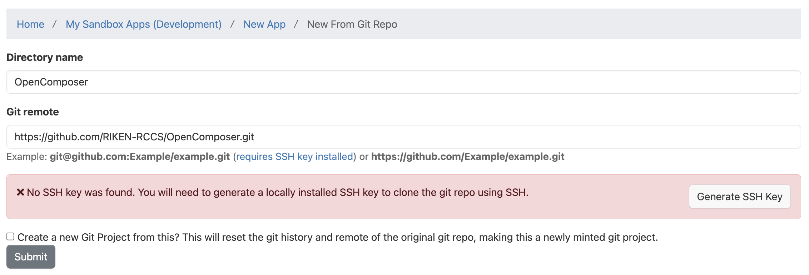

How to install Open Composer
1. Installation
Open Composer runs on Open OnDemand. Save Open Composer in your Open OnDemand application directory: /var/www/ood/apps/sys/.
# cd /var/www/ood/apps/sys/ # git clone https://github.com/RIKEN-RCCS/OpenComposer.git
2. Setting
Create ./conf.yml.erb with reference to ./conf.yml.erb.sample.
# cd OpenComposer # cp conf.yml.erb.sample conf.yml.erb
| Item name | Setting |
|---|---|
| apps_dir | Application directory |
| scheduler | Job scheduler (slurm, pbspro, sge, fujitsu_tcs) |
| clusters | Cluster properties |
| data_dir | Directory where submitted job information is stored (Default is ${HOME}/composer) |
| login_node | Login node when you launch the Open OnDemand web terminal |
| ssh_wrapper | Command for using the job scheduler of another node using SSH |
| bin | PATH of commands of job scheduler |
| bin_overrides | PATH of each command of job scheduler |
| sge_root | Directory for the Grid Engine root (SGE_ROOT) |
| history | Additional display fields on the history page |
| footer | Text in the footer |
| thumbnail_width | Width of thumbnails for each application on the home page |
| navbar_color | Color of navigation bar |
| dropdown_color | Color of dropdown menu |
| footer_color | Color of footer |
| category_color | Background color of the home page category |
| description_color | Background color of the application description in the application page |
| form_color | Background color of the text area in the application page |
The apps_dir and scheduler are required. However, the scheduler may be defined inside clusters.
2.1. clusters
Set this when using multiple clusters.
You can set scheduler, login_node, ssh_wrapper, bin, bin_overrides, and sge_root for each cluster.
This setting is optional if you use only a single cluster.
The following defines the use of the fujitsu_tcs and slurm job schedulers on the fugaku and prepost clusters, respectively.
clusters:
fugaku:
scheduler: "fujitsu_tcs"
prepost:
scheduler: "slurm"
bin_overrides:
sbatch: "/usr/local/bin/sbatch"
In the following, both the fugaku and prepost clusters use the slurm job scheduler, but it defines that slurm is executed from different machines.
scheduler: "slurm"
clusters:
fugaku:
ssh_wrapper "ssh fugaku.example.net"
prepost:
ssh_wrapper "ssh prepost.example.net"
2.2. bin_overrides
Set the path for each command. This setting is optional.
If the job scheduler is slurm, set sbatch, scontrol, scancel, and sacct as follows.
bin_overrides: sbatch: "/usr/local/bin/sbatch" scontrol: "/usr/local/bin/scontrol" scancel: "/usr/local/bin/scancel" sacct: "/usr/local/bin/sacct"
If the job scheduler is pbspro, set qsub, qstat, and qdel as follows.
bin_overrides: qsub: "/usr/local/bin/qsub" qstat: "/usr/local/bin/qstat" qdel: "/usr/local/bin/qdel"
If the job scheduler is sge, set qsub, qstat, qdel, and qacct as follows.
bin_overrides: qsub: "/usr/local/bin/qsub" qstat: "/usr/local/bin/qstat" qdel: "/usr/local/bin/qdel" qacct: "/usr/local/bin/qacct"
If the job scheduler is fujitsu_tcs, set pjsub, pjstat, and pjdel as follows.
bin_overrides: pjsub: "/usr/local/bin/pjsub" pjstat: "/usr/local/bin/pjstat" pjdel: "/usr/local/bin/pjdel"
2.3. history
The mandatory fields to be displayed on the history page are "Job ID", "Application", "Script Name", and "Status". In addition to these, optional display fields can be configured. This configuration is optional.
If nothing is specified in history, "Job Name", "Partition", and "Submission Time" are automatically set.
This is equivalent to the code shown below.
OC_HISTORY_JOB_NAME, OC_HISTORY_PARTITION, and OC_HISTORY_SUBMISSION_TIME are special variables that correspond to "Job Name", "Partition", and "Submission Time", respectively.
history: OC_HISTORY_JOB_NAME: OC_HISTORY_PARTITION: OC_HISTORY_SUBMISSION_TIME:

If you want to disable additional display fields, define an empty array.
history: []

You can set profile values obtained from the job scheduler as display fields.
Specify in history the value shown in the left column of the table that appears when you click "Job ID".
By using label, you can define a display label.
If label is not specified, the profile value is used as is.

history:
OC_HISTORY_JOB_NAME:
Account:
AllocCPUS:
label: Allocated CPUs

3. Registration for Open OnDemand
3.1. By administrator
When you save Open Composer to /var/www/ood/apps/sys/, the Open Composer icon will be displayed on the Open OnDemand home page.
If it is not displayed, check /var/www/ood/apps/sys/OpenComposer/manifest.yml.
You can also display Open Composer applications on the Open OnDemand home page.
For example, if you want to display an application /var/www/ood/apps/sys/OpenComposer/sample_apps/Slurm,
create a directory with the same name in the Open OnDemand application directory (# mkdir /var/www/ood/apps/sys/Slurm).
Then, create the following Open OnDemand configuration file manifest.yml in that directory.
# /var/www/ood/apps/sys/Slurm/manifest.yml --- name: Slurm url: https://<your Open OnDemand URL>/pun/sys/OpenComposer/Slurm
3.2. By general user
You can also install Open Composer with general user privileges. However, the App Development feature in Open OnDemand needs to be enabled in advance by an administrator.
Select "My Sandbox Apps (Development)" under "</> Develop" in the navigation bar (If your web browser window size is small, it will display "</>" instead of "</> Develop").
Click "New App".

Click "Clone Existing App".

Enter any name in "Directory name" (here we enter OpenComposer), enter "https://github.com/RIKEN-RCCS/OpenComposer.git" in "Git remote", and click "Submit".
Click "Launch Open Composer".

4. Adding a Job Scheduler
If you want to add a job scheduler, create a Ruby script for the job scheduler under lib/schedulers/ using the superclass Scheduler defined in lib/scheduler.rb as a reference. Inherit the Scheduler class as shown in the PBS Pro example below (lib/schedulers/pbspro.rb).
You must define the submit() method for submitting a job, the cancel() method for canceling a job, and the query() method for querying job information.
class Pbspro < Scheduler
Also, in some clusters, job scheduler commands (e.g., qstat) are wrapper scripts, making it impossible for users to execute the original commands. In such cases, you may be able to address this issue by making minor changes to the existing scheduler script. For example, in lib/schedulers/miyabi.rb, a new class, Miyabi, is defined by inheriting the PBS Pro scheduler, as shown below. The Miyabi class defines only the query() method, while the other methods use those defined in lib/schedulers/pbspro.rb.
class Miyabi < Pbspro
After creating the job scheduler script, specify the scheduler in ./conf.yml.erb as shown below.
scheduler: miyabi